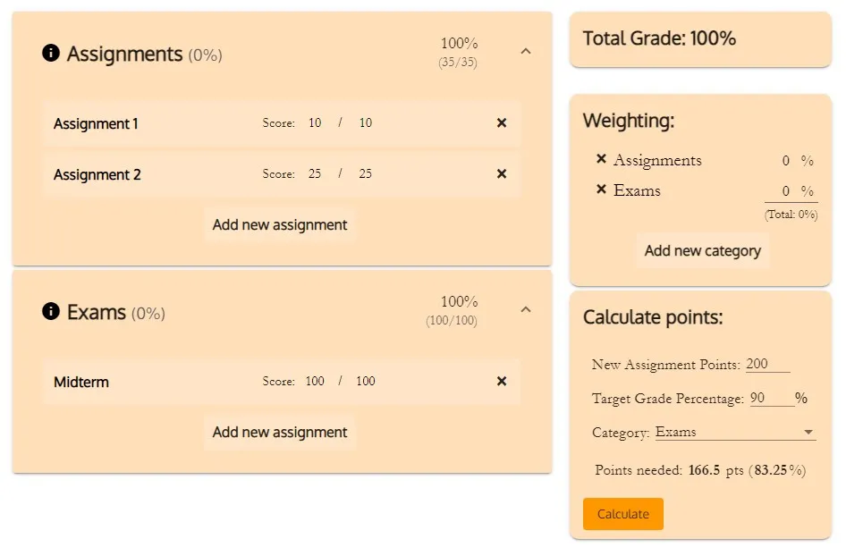
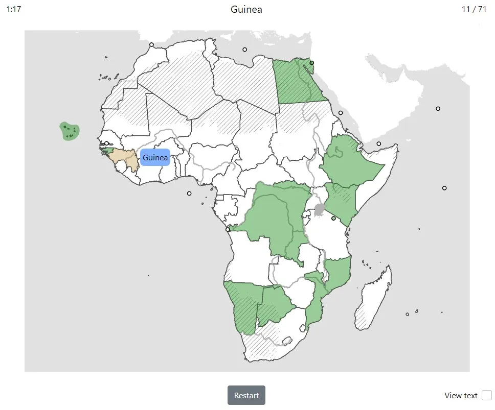
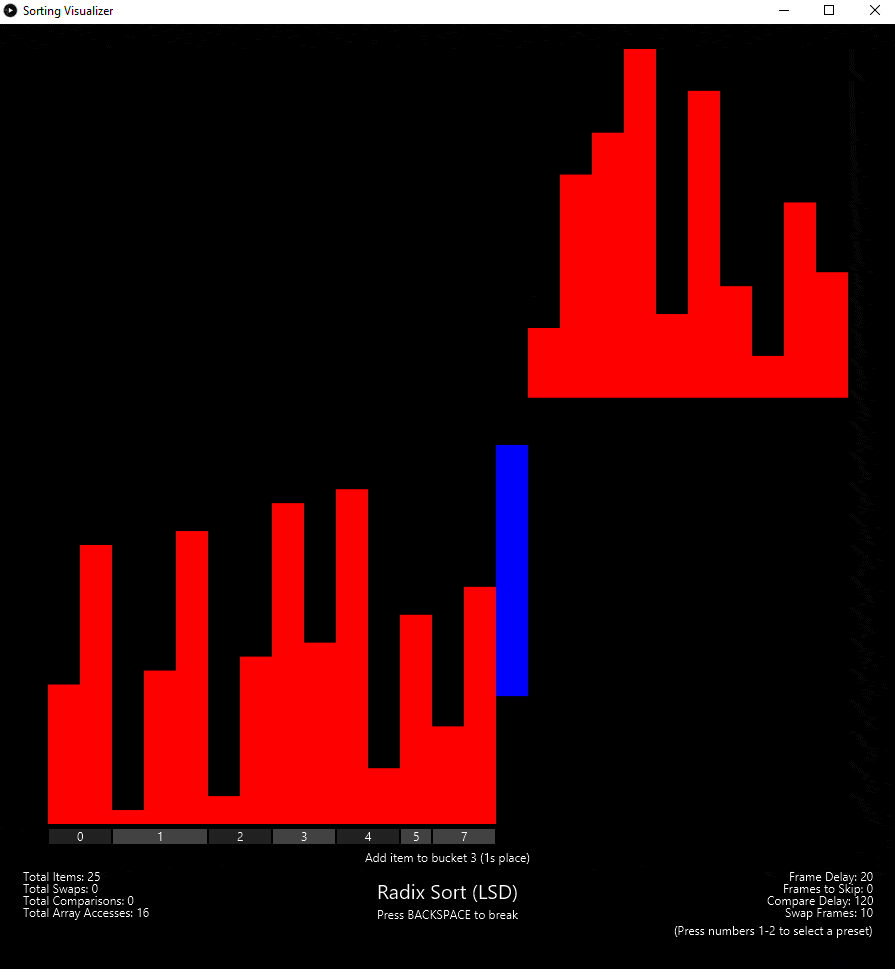
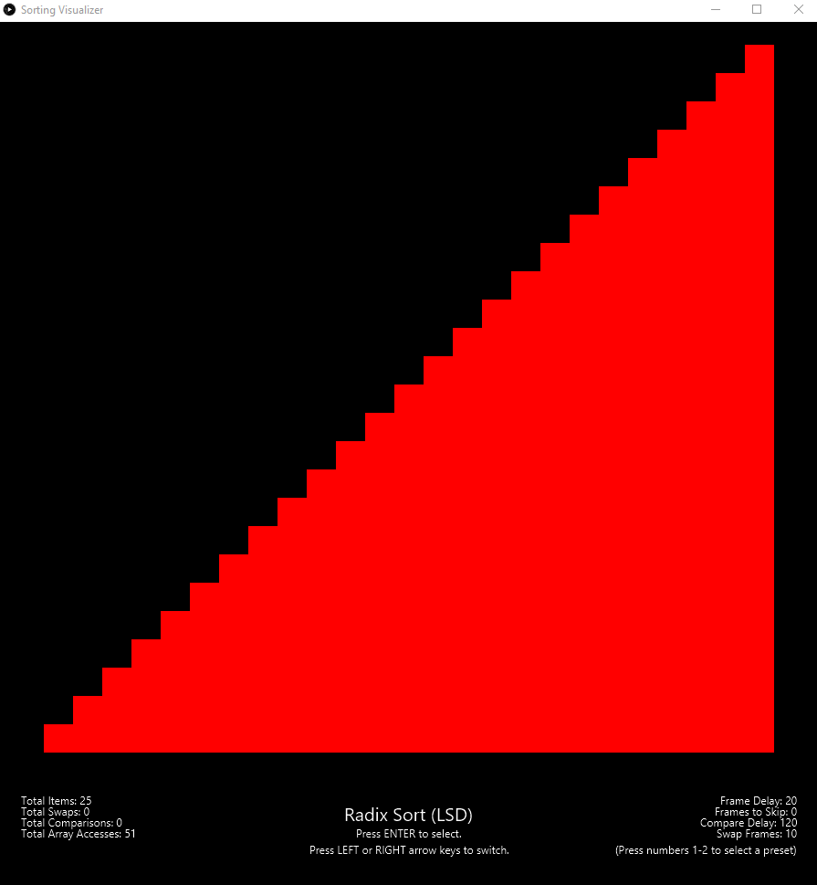
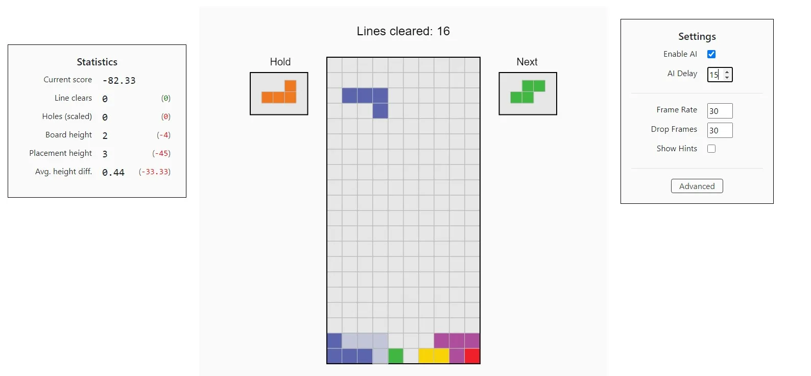

Hi!
My name is Alec Li and I'm a Computer Science and Applied Math double major at UC Berkeley.
I also enjoy composing music, playing tetris, swimming, and tackling random puzzles I find on the internet.
Projects

A website built with Angular and Typescript to help students
easily manage, calculate, and predict grades in classes that use Canvas LMS.
Includes a text parser to convert raw pasted webpage text into Angular components,
utilizing local browser storage to persist parsed data.
Grade distributions for assignments are also illustrated in responsive box plots with d3.js.

A website built in vanilla HTML and JS, with manually edited SVG maps
to help students in Berkeley's GEOG10 course with map quizzes of all continents and the world map.
Utilizes JavaScript to handle timers and quiz functionality,
including the scrollable and resizable map interface.


A Processing 3 and JavaFX applet for visualizing 20+ different kinds of sorts.
All sorts are animated and annotated with highlights and short descriptions at each step.
Also includes documentation for each sort, describing the algorithm and time/space complexities.

A web app built with p5.js, simulating the traditional game of Tetris.
Includes a fully configurable AI using a fitness score
composed of various statistics like
line clears, board height, number of holes, etc.